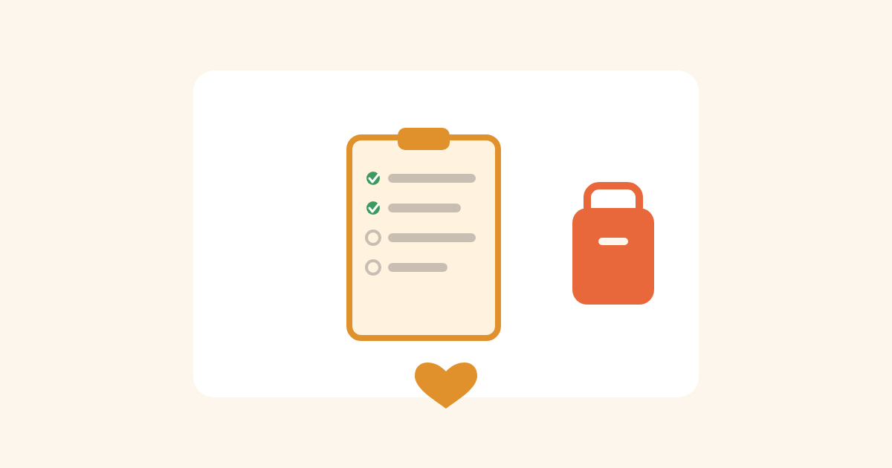

Kako obavijestiti vrtić/školu o alergiji djeteta
29. august 2026.

Kod kuće kontrolišeš sve — šta je u frižideru, ko kuva, šta se servira. Čim dijete krene u vrtić ili školu, ta kontrola prelazi na ljude koji tvoje dijete tek upoznaju. Evo kako to predati na najsigurniji način.
Napravi pisani plan
Usmena priča na roditeljskom sastanku se zaboravi. Napiši kratak, konkretan dokument (jedna stranica je dovoljna) i predaj ga vaspitaču/učitelju i medicinskoj sestri škole, ako je ima:
- Ime djeteta i tačno koji alergen(i) — ne "alergičan na orašaste plodove" nego precizno koje
- Kako izgleda blaga reakcija kod tvog djeteta, i kako izgleda ozbiljna (svako dijete malo drugačije reaguje)
- Tačni koraci šta uraditi, redom — ako imaš adrenalinski autoinjektor, gdje se nalazi i kako se koristi
- Tvoj broj telefona, broj drugog roditelja/staratelja, broj pedijatra
- Datum i potpis — i tvoj i vaspitača/učitelja, da se zna da je pročitano
Razgovor uživo, ne samo papir
Papir se potpiše i zaboravi u fascikli. Zakaži kratak sastanak prije početka godine (ili odmah nakon upisa) i pokaži autoinjektor uživo — kako izgleda, gdje se drži, kako se otvara. Ako škola/vrtić dozvoljava, donesi vježbovni (trainer) uzorak da vaspitač/učiteljica fizički proba pokret.
Na čemu insistirati
- Autoinjektor mora biti dostupan, ne zaključan u kancelariji direktora tri sprata dalje
- Bar jedna odrasla osoba u smjeni zna kako se autoinjektor koristi — ne samo "zna da postoji"
- Kod grickalica za rođendane/proslave u razredu — dogovor da se tebe pita unaprijed, ili da ti doneseš sigurnu alternativu za svoje dijete
- Kod kreativnih aktivnosti (tijesto za igru, slikanje jestivim materijalima) — provjeri sastojke, alergeni se kriju i tu
Kako da ne budeš "dosadan roditelj"
Najbolji pristup je konkretan i rješava problem umjesto da samo upozorava. Umjesto "pazite, jako je opasno" — ponudi rješenje: "Evo moj broj, pozovite me za svaku nedoumicu" ili "Ja ću donijeti sigurne grickalice za cijeli razred za rođendane, ne morate vi brinuti o tome." Vaspitači/učitelji imaju desetine djece — što im olakšaš, to će plan realnije i zaživjeti u praksi. Ponovi razgovor na početku svake nove školske godine — novi vaspitač/učitelj, isti rizik.
Prije prvog dana — kratka lista
- Sastanak zakazan i održan prije početka
- Pisani plan potpisan od svih relevantnih osoba
- Lijek (ako je propisan) fizički dostavljen u ustanovu, provjeren rok trajanja
- Ti imaš kopiju svega, uključujući potpisan primjerak
Korisna sitnica: ako baka, deda ili neko drugi povremeno čuva dijete, podijeli mu profil direktno iz aplikacije (dugme 📤 kod profila) — dobije link, njegova app se sama podesi sa istim alergenima, spreman da odmah skenira bez da ga ti moraš svaki put podsjećati usmeno.
⚠️ Ovaj tekst je opšta informacija, ne zamjena za medicinski akcioni plan koji ti napravi alergolog — njega treba priložiti uz ovaj dogovor sa vrtićem/školom.